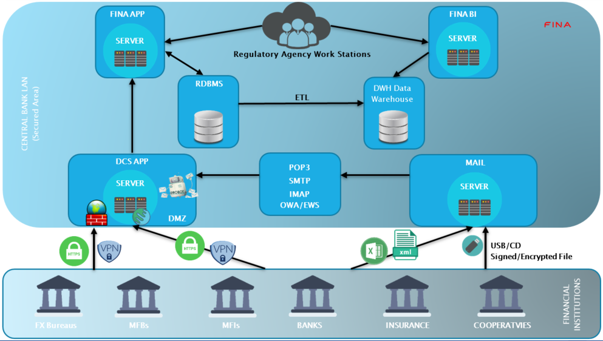

FINA IRP is an Integrated Regulatory Platform (Regtech / Suptech) for bank supervision authorities to collect data from the financial institutions and analyze them using integrated business intelligence tools, store them in the database and generate different reports using very flexible reporting tools.
FINA is a fully customizable and localizable system; It is independent of any legal, regulatory, or accounting framework. Changes in input/output forms does not require additional programming and can be implemented into the system very quickly with any user with knowledge of spreadsheet functionality.
FINA is platform independent and works on Windows, Linux, AIX and Solaris.
FINA is database independent. It supports 3 main database systems -MSSQL, Oracle, and MySQL.
FINA is a 3 tier java application and this makes it scalable and extendable.
FINA is open source under the GNU/GPL license.
Ensure complete, secure control of the document lifecycle, with straightforward search, storage, indexing, and version management. Application examples include Enterprise Document Management, Enterprise Content Management (ECM), Web Content Management (WCM), Content Management Interoperability Services (CMIS), and Collaboration.
Benefits: Streamlined, automated lifecycle management; Fast, easy access to searchable content; Mitigated risk thorough audit trails and use histories.
Key Features:
Our Document Management solutions provide organizations with all the services necessary for creating, converting, managing, and sharing electronic documents. Built on industry-standard open source platforms, our solutions ensure completeness, validity, traceability, and inalterability of important documents ranging from employment and maintenance contracts to purchase agreements and collaboration agreements with business partners. Additional features include version management, search capabilities, and visual representation of relationships and dependencies.
An intuitive interface allows administrators to import and export workspaces and documents, and manage users and security based on Users, Groups, and Roles. Presentation templates and dashboard views provide personalized and real-time reporting of selected content. The preview feature shows content in combination with other elements, and the composite document feature helps to logically group documents and digital assets for specific marketing projects. Comprehensive search capabilities support indexing, metadata, and multi-category searches.
Our Document Management solutions are interoperable with any database (Oracle, MySQL, etc.), any membership system (RDBMS, LDAP, Windows Directory Services, etc.), any operating system (Windows, Linux, Solaris, etc.), and any external system (.NET, J2EE, Python, PHP, etc.). A built-in data management and transformation engine enables organizations to transform data into required formats based on business rules. And an integrated workflow tool gives users complete control over document lifecycle management and process flow.